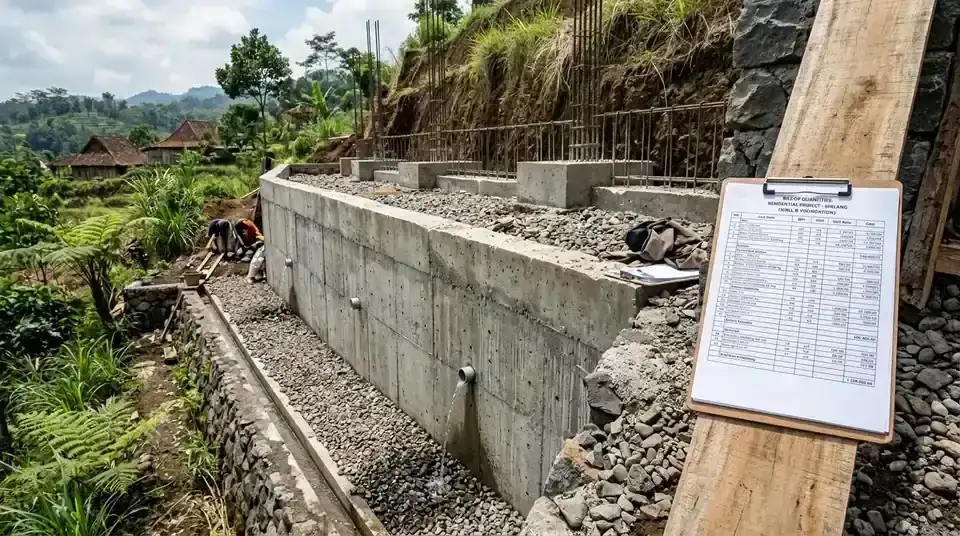

Ringkasan Inti
- Pengalaman menangani proyek serupa membantu arsitek memperkirakan volume material dan biaya secara realistis.
- Transparansi rincian harga satuan komponen menjadi tolok ukur utama integritas dan profesionalisme arsitek.
- Sertifikasi resmi keanggotaan IAI menjamin standar kompetensi teknis dan etika profesi arsitektur.
- Komunikasi intensif sejak tahap konsep mencegah perubahan spesifikasi mendadak yang memicu lonjakan anggaran.
Daftar Isi Artikel
Menyusun rencana anggaran biaya (RAB) yang presisi adalah fondasi utama keberhasilan pembangunan hunian di Malang Raya. Tanpa bimbingan arsitek profesional yang memahami fluktuasi harga material lokal serta kondisi topografi setempat, proyek hunian berisiko tinggi mengalami pembengkakan anggaran (budget overrun) yang merugikan pemilik rumah.
Kriteria Arsitek Profesional yang Membantu RAB Tetap Akurat
Arsitek profesional yang dapat membantu menyusun RAB akurat umumnya memiliki kombinasi pengalaman teknis lapangan yang matang, transparansi komunikasi menyeluruh, dan kredibilitas profesional yang dapat diverifikasi oleh calon klien. Di wilayah Malang dengan kontur lahan yang bervariasi mulai dari dataran Lowokwaru hingga perbukitan Dau dan Batu, estimasi biaya memerlukan perhitungan teknis mendalam terhadap struktur tanah dan fondasi.
Beberapa kriteria utama yang wajib diperhatikan saat menyeleksi arsitek untuk perencanaan anggaran proyek hunian Anda meliputi:
- Portofolio Proyek Relevan: Memiliki riwayat portofolio terbangun dengan skala, gaya desain, dan kondisi geografis yang serupa dengan kebutuhan Anda di Jawa Timur.
- Transparansi Analisis Harga Satuan Pekerjaan (AHSP): Bersedia membedah rincian volume material, spesifikasi merek, dan koefisien tenaga kerja secara terbuka, bukan sekadar memberikan angka gelondongan per meter persegi.
- Sertifikasi Resmi Asosiasi Profesi: Memiliki sertifikat keahlian arsitek (STRA) dan keanggotaan aktif Ikatan Arsitek Indonesia (IAI) Daerah Malang yang menandakan ketaatan pada standar etika keprofesian.
- Kemampuan Rekayasa Nilai (Value Engineering): Mampu memberikan alternatif desain dan substitusi material berkualitas setara yang mampu menekan biaya tanpa menurunkan integritas struktur maupun estetika bangunan.

Cara Menilai Pengalaman Arsitek dalam Penyusunan RAB
Menilai keandalan arsitek dalam menyusun kalkulasi biaya tidak cukup hanya dengan melihat keindahan visual gambar 3D render. Pemilik rumah perlu menguji sejauh mana arsitek menguasai realitas konstruksi fisik di lapangan serta dinamika rantai pasok material di wilayah Malang Raya.
Langkah strategis yang dapat Anda terapkan untuk menguji kompetensi estimasi biaya arsitek:
- Meminta Sampel Dokumen RAB Proyek Terdahulu: Periksa format lembar kerja RAB. Dokumen yang kredibel memisahkan pekerjaan persiapan, struktur bawah, struktur atas, arsitektural dinding, mechanical electrical plumbing (MEP), hingga pekerjaan finishing dengan satuan volume yang jelas (m³, m², unit).
- Menanyakan Prosedur Penanganan Perubahan Desain (Addendum): Tanyakan bagaimana mekanisme arsitek mengelola variasi pekerjaan (variation order) jika di tengah pelaksanaan klien menginginkan perubahan spesifikasi keramik atau bukaan kaca.
- Meninjau Akurasi Deviasi Proyek Lalu: Minta konfirmasi seberapa besar deviasi antara RAB awal rancangan arsitek dengan realisasi biaya aktual kontraktor saat serah terima kunci. Deviasi di bawah 5% menunjukkan tingkat presisi perencanaan yang sangat tinggi.
- Diskusi Alokasi Pos Kontinjensi: Arsitek berpengalaman selalu merekomendasikan dana cadangan tak terduga (contingency fund) sebesar 5% hingga 10% untuk mengantisipasi anomali tanah atau fluktuasi harga pasar.
Catatan Arsitek Malang
Jangan pernah menandatangani kontrak pekerjaan konstruksi atau membeli material utama sebelum Gambar Kerja Detail Engineering Design (DED) terkunci 100%. Ketidaklengkapan lembar detail pembesian fondasi, pola lantai, atau skema kelistrikan adalah sumber kebocoran anggaran paling masif karena kontraktor akan mengenakan tarif pekerjaan tambah yang tidak terstandardisasi.
Tanda Arsitek Kurang Kompeten dalam Menyusun Anggaran Proyek
Banyak pemilik rumah terjebak oleh estimasi awal yang terkesan sangat murah, namun berujung mangkrak di tengah proses pembangunan. Mengenali tanda-tanda ketidaksiapan arsitek dalam aspek manajerial biaya sejak dini akan menyelamatkan aset investasi properti Anda.
Waspadai indikator peringatan berikut pada saat tahapan konsultasi awal:
- Estimasi Harga Instan Tanpa Mengkaji Lokasi: Memberikan klaim tarif bangun per meter persegi tanpa meninjau daya dukung tanah, kemiringan kontur, atau aksesibilitas jalan truk material menuju lokasi proyek.
- Ketiadaan Rincian Spesifikasi Teknis (RKS): Tidak menyertakan Rencana Kerja dan Syarat-syarat yang menjabarkan tipe semen, mutu beton bertulang (fc'/K), jenis kabel berstandar SNI, hingga merek cat tahan cuaca ekstrem Malang.
- Menolak Memasukkan Biaya Perizinan dan Kontinjensi: Menghilangkan komponen biaya retribusi PBG/SIMBG, pengujian sondir tanah, dan pengawasan berkala dari kalkulasi keseluruhan agar proyek terlihat murah di awal.
- Enggan Dikonfirmasi Terkait Vendor Lokal: Kurang memahami ketersediaan material di toko bangunan lokal Malang, sehingga mengasumsikan penggunaan material impor yang memerlukan ongkos kirim logistik tinggi.
Peran Komunikasi Efektif agar RAB Sesuai Anggaran
Hubungan kerja sama yang harmonis antara pemilik rumah dan tim arsitek dibangun atas dasar kejujuran batasan finansial. Arsitek profesional memposisikan diri sebagai penasihat keuangan konstruksi yang menjembatani impian estetika Anda dengan realitas anggaran yang dialokasikan.
Pada tahap konsep awal, arsitek yang baik akan menanyakan batas atas anggaran (budget ceiling) dan memetakan prioritas ruang keluarga, kamar tidur, hingga fasad eksterior. Dengan pembaruan estimasi biaya secara berkala pada setiap perubahan denah, pemilik rumah memegang kendali penuh atas setiap rupiah yang diinvestasikan.
FAQ (Pertanyaan Sering Diajukan)
Apakah sertifikasi IAI menjamin arsitek mampu menyusun RAB akurat?
Sertifikasi IAI menandakan kepatuhan standar kompetensi profesional dan etika kerja, namun keahlian spesifik dalam penyusunan RAB tetap perlu dievaluasi melalui rekam jejak portofolio dan referensi kepuasan klien sebelumnya.
Berapa biaya konsultasi untuk mendapatkan estimasi RAB dari arsitek profesional?
Biaya konsultasi bervariasi tergantung ruang lingkup proyek. Di Arsitek Malang, sesi konsultasi awal gratis, sedangkan penyusunan dokumen RAB detail terintegrasi langsung dalam paket desain komplit berstandar DED.
Apakah RAB dari arsitek profesional selalu lebih mahal dibanding estimasi mandiri?
RAB dari arsitek profesional tampak lebih komprehensif karena mencantumkan setiap detail material, upah tukang, dan faktor risiko lapangan. Ketelitian ini justru melindungi pemilik rumah dari pembengkakan biaya tak terduga yang jauh lebih menguras anggaran di tengah proses konstruksi.
Konsultasikan RAB Proyek Bangun Rumah Anda Bersama Tim Ahli
Wujudkan hunian impian dengan estimasi biaya transparan, gambar kerja DED presisi, dan perhitungan struktur tahan gempa bergaransi.